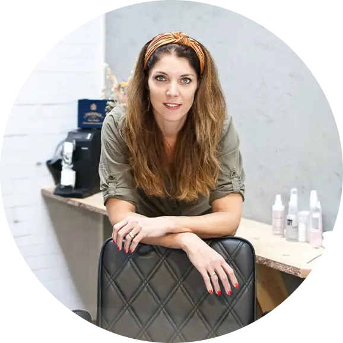
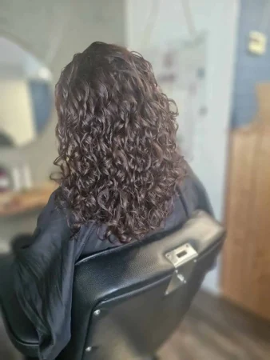
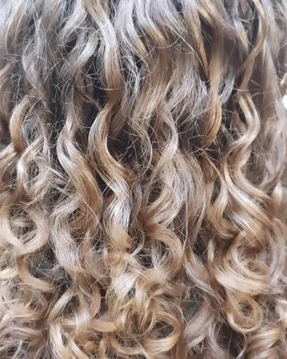
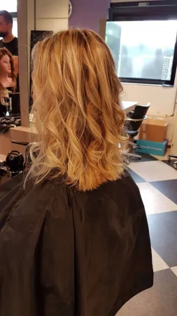
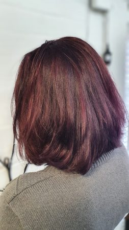
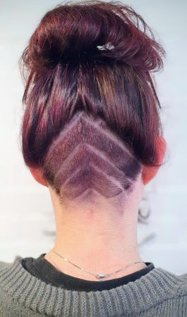
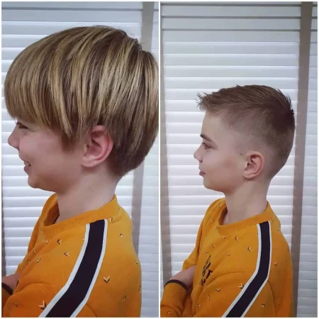
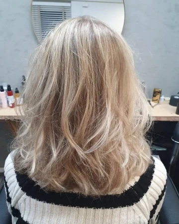
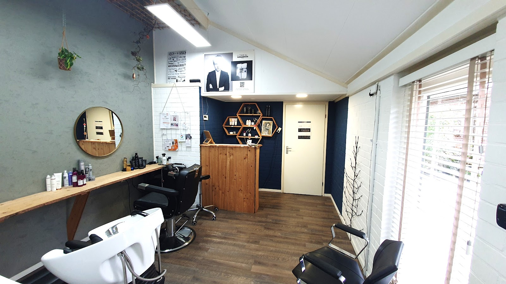

Kapper in Aalten, officieel krullenkapper
Krullen mogen hier gewoon krullen.
In mijn kleine salon neem ik de tijd voor je. Ik knip en kleur voor dames, heren en kinderen, en ik weet precies wat krullen nodig hebben.
4,9 uit 17 Google-reviews


Officieel krullenkapper
Elke krul telt.
Krullen hebben een andere aanpak nodig dan steil haar. Daarom knip ik ze volgens de CurlSys-methode. Klanten merken het verschil: ze vertellen me dat ze sindsdien veel meer krul hebben.
Ik neem er de tijd voor, en ik laat je zien hoe je je haar thuis verzorgt en welke producten daarbij helpen.
"Niemand anders mag aan mijn krullen zitten;) Echt een aanrader voor iedereen die krullen heeft."
Uit de stoel, de deur uit.
Knippen, kleuren of een compleet nieuwe look. Een greep uit wat er de afgelopen tijd in de salon gebeurde.






Aangenaam, Dianne.
In Aalten vind je mijn kapsalon: klein, gezellig en zonder haast. Persoonlijke aandacht en een ontspannen sfeer staan voorop, zodat je je hier altijd op je gemak voelt.
Ik heb meer dan 10 jaar ervaring en knip dames, heren en kinderen. Of je nu komt voor een knipbeurt, een nieuwe kleur of iets heel anders: ik denk mee, geef eerlijk advies en ga door tot het goed is. Zodat je met een glimlach de deur uitgaat.
Heb je een vraag? Stuur me gerust een berichtje.
Dianne Rave-Obbink
Wat klanten over Dianne zeggen.
4,9 gemiddeld uit 17 reviews op Google
"Ik voel me bij deze kapster op mijn gemak. Dianne is heel vriendelijk en heeft echt passie voor het haar. Ze knipt mijn haar volgens de CurlSys methode en sinds zij mijn haren knipt, heb ik echt veel meer krul! Ze neemt de tijd voor je. Dianne weet ook veel over haarproducten en leert je hoe je je haren thuis het beste"
"Gisteren heeft Dianne me geknipt en ik ben super blij met het resultaat! Dianne luistert goed naar je wensen, geeft advies en werkt heel secuur. Bovendien is het altijd gezellig."
"Dianne neemt de tijd, het is altijd gezellig. Ze denkt mee als je een x wat anders wil, ben nu dus ook ontzettend blij met m'n nieuwe coupe!"
"Ik kom al jaren bij Dianne voor de Curslys kniptechniek. Ben altijd erg tevreden met het resultaat! Niemand anders mag aan mijn krullen zitten;) Echt een aanrader voor iedereen die krullen heeft."
"Dit hebben onder een genot van een gebakje die gemaakt is gemaakt door Rudolf uit ijzerlo .
Endelijk van de corona kapsel af . "Verleden tijd ".
Mooi model geknipt. Ben er blij mee.
Succes Dianne."
Kom langs aan de Hagtweg.
Bel voor een afspraak. Op dinsdag ben ik tot 21:00 open, handig als je overdag werkt.
- Bellen
- 06 430 432 81
- Mailen
- kapsalon.dianne@gmail.com
- Adres
- Hagtweg 13A
7122 JS Aalten
Route plannen
Openingstijden
- Maandag09:00 tot 17:00
- Dinsdag13:00 tot 21:00
- Woensdaggesloten
- Donderdaggesloten
- Vrijdag10:00 tot 19:00
- Zaterdag10:00 tot 14:00
- Zondaggesloten